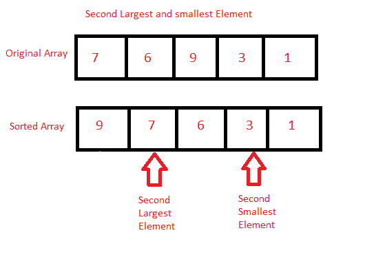

Java 程序：寻找数组中第二大和第二小元素
在本教程中，我们将学习如何在数组中找到第二大和第二小的元素。找到两个最大元素的最简单方法是首先对元素进行排序，然后返回存储在数组第一个和第二个最后一个索引处的元素。但是在继续之前，如果您不熟悉数组的概念，那么一定要查看 Java 中的文章 Arrays。

输入:输入数组元素:7 6 9 2 4 1 3 6 9
输出:第二小= 2
第二大= 7
程序 1:寻找第二大和第二小元素
在这种方法中，我们将直接找到数组中第二大和第二小的元素。
算法
- 开始
- 声明一个数组。
- 初始化数组。
- 使用两个 for 循环来显示数组中第二大和第二小的元素。
- 使用第一个 for 循环来保存数组的每个元素
- 使用第二个 for 循环将元素与其余元素进行比较。
- 交换元素以对元素进行排序。
- 显示第二大和第二小的元素。
- 停止
下面是相同的代码。
下面的程序演示了如何找到数组中第二大和第二小的元素。首先，声明一个数组，然后初始化。在两个 for 循环的帮助下，对数组的所有元素进行迭代，然后按降序对元素进行比较和交换。然后分别显示第二大和第二小的元素。
/*Java Program to find the second largest and second smallest elements in the array without using Functions*/
import java.util.Scanner;
public class FindElement
{
public static void main(String []args)
{
Scanner sc=new Scanner(System.in);
int n; //Declare array size
System.out.println("Enter the size of the array");
n=sc.nextInt(); //Initialize array size
int arr[]=new int[n]; //Declare array
System.out.println("Enter the array");
for(int i=0;i<n;i++) //Initialize array
{
arr[i]=sc.nextInt();
}
for(int i=0;i<n;i++) //Use to hold the element
{
for(int j=i+1;j<n;j++) //Use to compare with the rest of the elements
{
if(arr[i]<arr[j]) //Check and swap
{
int temp=arr[i];
arr[i]=arr[j];
arr[j]=temp;
}
}
}
System.out.println("Second Largest element is "+arr[1]); //Display second largest element.
System.out.println("Second Smallest element is "+arr[n-2]); //Display second smallest element.
}
}
输入数组 10 的大小 输入数组 56 7 6 45 3 4 23 12 21 1 第二大元素是 45 第二小元素是 3
程序 2:寻找第二大和第二小元素
在这种方法中，我们将使用单独的方法，使用 Arrays.sort().找到数组中第二小和第二大的元素
算法
- 开始
- 声明一个数组。
- 初始化数组。
- 调用将显示数组中第二大和第二小元素的方法。
- 使用
Arrays.sort()对数组进行排序。 - 在第一个和第二个最后索引处显示元素。
- 这是第二大第二小的元素。
- 停止
下面是相同的代码。
下面的程序演示了如何使用单独的方法，通过Arrays.sort()找到数组中第二大和第二小的元素。首先，声明一个数组，然后初始化。接下来调用一个方法。使用Arrays.sort()对数组进行排序，显示第一个和第二个最后的元素，分别是第二小和第二大元素。
/*Java Program to find the second largest and second smallest elements in the array using Functions*/
import java.util.Scanner;
import java.util.*;
public class findElement
{
static void findLargest(int arr[], int n) //Method to find the second largest and second smallest element
{
Arrays.sort(arr); //Sorts the array in ascending order
System.out.println("Second Largest element is "+arr[n-2]); //Display Second Smallest
System.out.println("Second Smallest element is "+arr[1]); //Display Second Largest
}
public static void main(String []args)
{
Scanner sc=new Scanner(System.in);
int n; //Declare array size
System.out.println("Enter the size of the array");
n=sc.nextInt(); //Initialize array size
int arr[]=new int[n]; //Declare array
System.out.println("Enter the array");
for(int i=0;i<n;i++) //Initialize array
{
arr[i]=sc.nextInt();
}
findLargest(arr,n); //Function Call
}
}
输入数组 10 的大小 输入数组 8 7 9 5 4 3 8 6 1 2 第二大元素是 8 第二小元素是 2